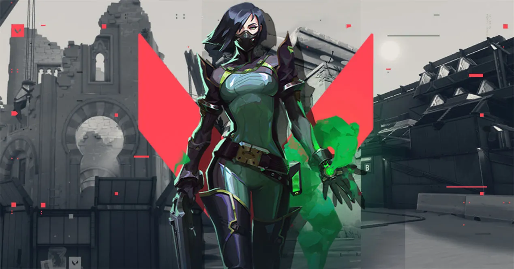

Requisitos
Una vez lo tengas podrás comenzar a jugar. Pero antes asegúrate de cumplir con los requisitos mínimos para disfrutar del juego como debe ser. Esto es lo que vas a necesitar en tu PC para jugar a Valorant.
-PC con Windows 7 o superior de 64 bits
-4 GB de memoria RAM
-Tarjeta gráfica con 1 GB de VRAM
-Esto es lo mínimo, a partir de ahí, según a la calidad a la que quieras jugar y número de FPS que busques (lo que lógicamente también te da ventajas a nivel competitivo) lo que vas a necesitar es lo siguiente:
-Configuración mínima para 30 fps: Intel Core 2 Duo y GPU Intel HD 4000
-Configuración recomendada a 60 fps: Intel Core i3 y GPU Nvidia GeForce GT730
-Configuración gama alta a 144 fps o más: Intel core i5 y GPU Nvidia GTZ1050 Ti
-El tema de las gráficas Nvidia y procesadores Intel es a modo de referencia, los equivalentes en AMD a esas gamas serán los que has de buscar para disfrutar de la misma o mejor experiencia de juego.